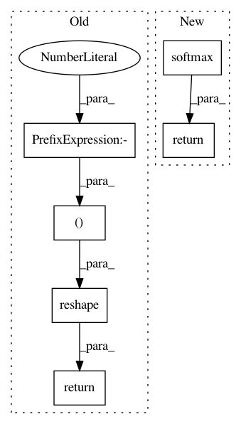

cdedee771633ab5e4514942dde7f540a53ca3908,AutoSklearn/components/classification/sgd.py,SGD,predict_proba,#SGD#Any#,64
Before Change
return np.transpose(np.array((1 - ppositive, ppositive)))
else:
tmp = np.exp(-df)
return tmp / np.sum(tmp, axis=1).reshape((-1, 1))
@staticmethod
def get_properties():
return {"shortname": "SGD Classifier",
After Change
return self.estimator.predict_proba(X)
else:
df = self.estimator.decision_function(X)
return softmax(df)
@staticmethod
def get_properties():
return {"shortname": "SGD Classifier",
In pattern: SUPERPATTERN
Frequency: 3
Non-data size: 6
Instances
Project Name: automl/auto-sklearn
Commit Name: cdedee771633ab5e4514942dde7f540a53ca3908
Time: 2015-01-14
Author: feurerm@informatik.uni-freiburg.de
File Name: AutoSklearn/components/classification/sgd.py
Class Name: SGD
Method Name: predict_proba
Project Name: keras-team/keras
Commit Name: 5ed913da1108b63c69d48d30b395ae35e576dc9f
Time: 2015-11-15
Author: francois.chollet@gmail.com
File Name: keras/activations.py
Class Name:
Method Name: softmax
Project Name: automl/auto-sklearn
Commit Name: cdedee771633ab5e4514942dde7f540a53ca3908
Time: 2015-01-14
Author: feurerm@informatik.uni-freiburg.de
File Name: AutoSklearn/components/classification/liblinear.py
Class Name: LibLinear_SVC
Method Name: predict_proba